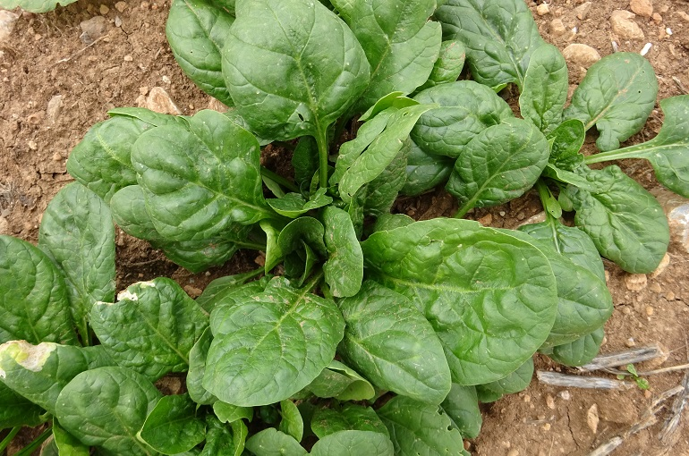

Ajo
- Forma de siembra: Directa (Marzo-Abril)
- Asociación benefica: albahaca, berenjena, escarola, fresas, lechuga, nabo, pepino, pimiento, remolacha, tomate, zanahoria.
- Asociación dañina: col, puerro, leguminosas (guisante, haba, judía).
Brócoli
- Forma de siembra: Almácigo (Abril-Julio)
- Transplante: Junio-Agosto
- Asociación benefica: albahaca, cebolla, papa, perejil
- Asociación dañina: frutillas, porotos, tomate
Cebolla

- Forma de siembra: A golpes (Octubre-Noviembre)
- Asociación benefica: berenjena, calabacín, col, escarola, espinaca, fresa, lechuga, melón, pepino, perejil, puerro, remolacha, sandía, tomate, zanahoria
- Asociación dañina: arveja, patata
 Coliflor
Coliflor
- Forma de siembra: Almácigo (Febrero-Marzo)
- Transplante: Marzo-Abril
- Asociación benefica: apio, tomate
- Asociación dañina: cebolla, repollo, patata
Espinaca

- Forma de siembra: Amácigo (febrero-Marzo-Junio)
- Asociación benefica: apio, berenjena, borraja, cebolla, col, escarola, fresa, guisante, haba, judía, lechuga, nabo, pimiento, puerro, rábano, tomate, zanahoria.
- Asociación dañina: acelga
Puerro
- Forma de siembra: Almácigo (Febrero-Abril)
- Transplante: Mayo-Julio
- Asociación benefica: fresa, lechuga
- Asociación dañina: arbeja, haba,
Repollo

- Forma de siembra: Almácigo (Febrero-Marzo)
- Transplante: (Marzo-Abril)
- Asociación benefica: acelga, apio, berenjena,calabaza, cebolla, escarola, espinaca, guisante, judía,lechuga, nabo, patata, pepino, pimiento, puerro,remolacha, tomate, zanahoria.
- Asociación dañina: ajo
volver